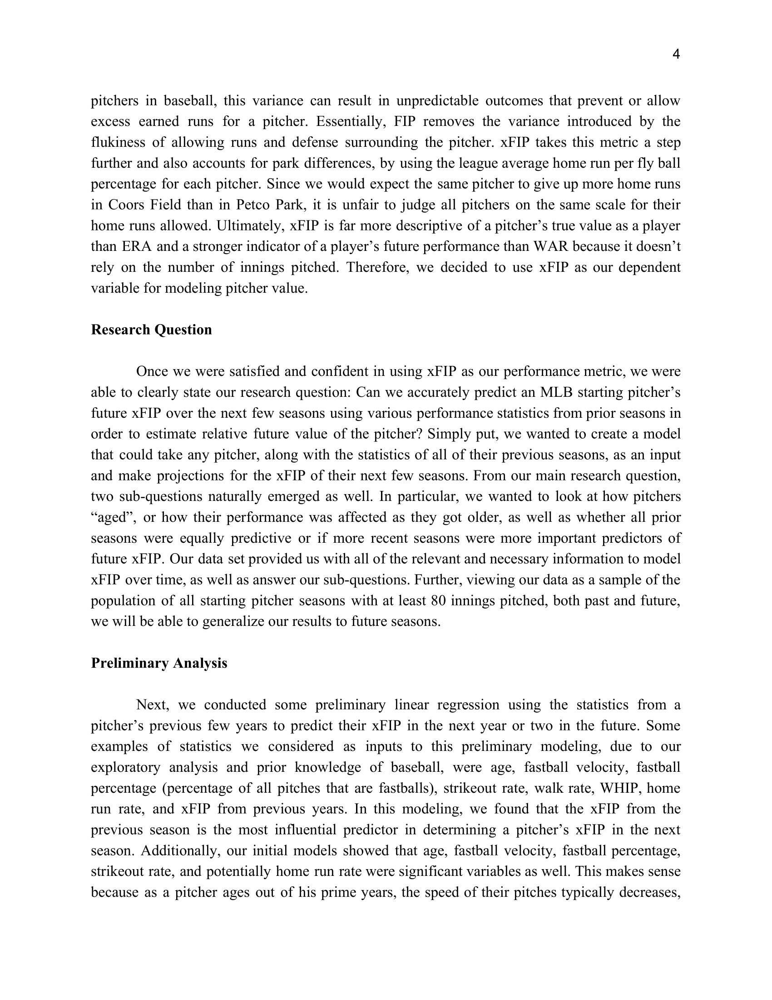

________________________________________________________________________
CS 6501: Information Retrieval
Re-ranking Search Results via Interactive Disambiguation
Project Summary: We hypothesize and develop a prototype search engine feature to help users clarify ambiguous search queries before displaying the results (for the sake of fairness). Ambiguity is measured, utilizing natural language processing, based on the diversity of the top N search results for a given search query.
Feel free to experiment with our interactive Google Search application


A Survey on Conversational IR Systems
Project Summary: A discussion of six key papers in the field of conversational information retrieval systems (search and recommendation engines)


CS 4710: Artificial Intelligence
Project Summary: A reinforcement learning framework is utilized to assess the success of a variety of autonomous stock trading strategies in historical market environments


CS 6111: Cloud Computing
Project Summary: A replication and expansion of the research presented by “AlloX: Computer Allocation in Hybrid Clusters”, which develops an online, min-cost bipartite matching algorithm to schedule jobs optimally and fairly within a hybrid CPU-GPU cluster


CS 4750: Database Systems
Project Summary: We create a MySQL database for 2020-21 NBA statistics, which allows users to select, and monitor the stats for, their favorite players and teams in the league.
Feel free to create an account on our 2020-2021 NBA analytics database to track player and team stats
Snapshot

CS 4501: Natural Language Processing
Project Summary: We develop a text-classification model to determine the Sub-Reddit page that a Reddit post originates from.


CS 4774: Machine Learning
Project Summary: We develop a model that utilizes regional demographic and economic data to predict county-level voter turnout in Virginia general elections.


STAT 4996: Capstone
Project Summary: We develop an auto-regressive model to predict three-year xFIP performance for MLB starting pitchers. We also create an application for users to explore our predictions and better understand how they are calculated.
Feel free to explore our MLB Starting Pitcher xFIP prediction application
Snapshot

Report


